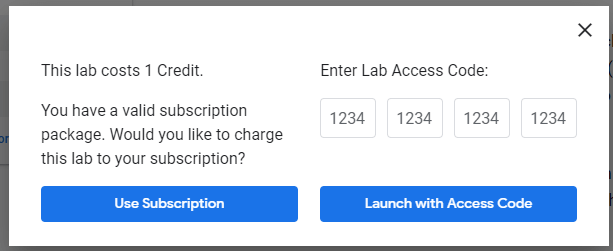

<!DOCTYPE html><html><head><meta charset="utf-8"><title>在 GCP 上建立 VM 架設 NIGNX Web server | Titangene Blog</title><meta http-equiv="X-UA-Compatible" content="IE=edge"><meta name="viewport" content="width=device-width,initial-scale=1,maximum-scale=1"><meta name="HandheldFriendly" content="True"><meta name="apple-mobile-web-app-capable" content="yes"><meta name="author" content="Titangene"><link rel="shortcut icon" href="/favicon.ico"><link rel="alternate" href="/atom.xml" title="Titangene Blog"><meta name="description" content="本篇是紀錄在 Google 的 Qwiklab 平台內，完成「Creating a Virtual Machine」這個 quest 所學到的內容，包括如何透過 GCP Console 和 command-line 工具 gcloud 在 GCP 建立 instance，如何使用 gcloud 透過 SSH 連接到你的 instance，以及如何在 VM 上部署 NIGNX web server。"><meta property="og:type" content="article"><meta property="og:title" content="在 GCP 上建立 VM 架設 NIGNX Web server"><meta property="og:url" content="https://titangene.github.io/article/gcp-vm-nignx-web-server.html"><meta property="og:site_name" content="Titangene Blog"><meta property="og:description" content="本篇是紀錄在 Google 的 Qwiklab 平台內，完成「Creating a Virtual Machine」這個 quest 所學到的內容，包括如何透過 GCP Console 和 command-line 工具 gcloud 在 GCP 建立 instance，如何使用 gcloud 透過 SSH 連接到你的 instance，以及如何在 VM 上部署 NIGNX web server。"><meta property="og:locale" content="zh_TW"><meta property="og:image" content="https://titangene.github.io/images/cover/gcp.jpg"><meta property="article:published_time" content="2019-04-14T02:17:46.000Z"><meta property="article:modified_time" content="2019-04-30T15:57:08.765Z"><meta property="article:author" content="Titangene"><meta property="article:tag" content="GCP"><meta property="article:tag" content="VM"><meta property="article:tag" content="NIGNX"><meta property="article:tag" content="Web Server"><meta name="twitter:card" content="summary_large_image"><meta name="twitter:image" content="https://titangene.github.io/images/cover/gcp.jpg"><meta name="twitter:creator" content="@titangeneTW"><meta name="twitter:site" content="@titangene_blog"><meta property="fb:admins" content="100001106016019"><meta property="fb:app_id" content="2470546159839111"><meta property="og:image:width" content="1200"><meta property="og:image:height" content="630"><meta name="google-site-verification" content="AaJ39L7h-nWwJjXJMhAMtXSF6H6BUgGWXC80kYvLic8"><link rel="stylesheet" href="//fonts.googleapis.com/css?family=Inconsolata|Titillium+Web"><link href="https://fonts.googleapis.com/css?family=Source+Code+Pro&display=swap" rel="stylesheet"><link rel="stylesheet" href="//use.fontawesome.com/releases/v5.7.0/css/all.css" integrity="sha384-lZN37f5QGtY3VHgisS14W3ExzMWZxybE1SJSEsQp9S+oqd12jhcu+A56Ebc1zFSJ" crossorigin="anonymous"><link rel="stylesheet" href="/style.css"><script async src="https://www.googletagmanager.com/gtag/js?id=UA-129758206-1"></script><script>!function(a){function n(){dataLayer.push(arguments)}a.dataLayer=a.dataLayer||[],n("js",new Date),n("config","UA-129758206-1")}(window)</script><script>function setLoadingBarProgress(e){document.getElementById("loading-bar").style.width=e+"%"}</script><meta name="generator" content="Hexo 4.2.0"><link rel="alternate" href="/atom.xml" title="Titangene Blog" type="application/atom+xml"></head></html><body><div id="loading-bar-wrapper"><div id="loading-bar"></div></div><script>setLoadingBarProgress(20)</script><header class="l_header"><div class="wrapper"><div class="nav-main container container--flex"><a class="logo flat-box" href="/">Titangene Blog</a><div class="menu"><ul class="h-list"><li><a class="flat-box nav-home" href="/">Home</a></li><li><a class="flat-box nav-archives" href="/archives">Archives</a></li></ul><div class="underline"></div></div><div class="m_search"><form name="searchform" class="form u-search-form"><input type="text" class="input u-search-input" placeholder="Search"> <i class="fas fa-search"></i></form></div><ul class="switcher h-list"><li class="s-search"><a class="fas fa-search" href="javascript:void(0)"></a></li><li class="s-menu"><a class="fas fa-bars" href="javascript:void(0)"></a></li></ul></div><div class="nav-sub container container--flex"><a class="logo flat-box" href="/">Titangene Blog</a><ul class="switcher h-list"><li class="s-comment"><a class="far fa-comment-alt" href="javascript:void(0)"></a></li><li class="s-top"><a class="fas fa-arrow-up" href="javascript:void(0)"></a></li><li class="s-toc"><a class="fas fa-list-ol" href="javascript:void(0)"></a></li></ul></div></div></header><aside class="menu-phone"><nav><a href="/" class="nav-home nav">Home </a><a href="/archives" class="nav-archives nav">Archives</a></nav></aside><script>setLoadingBarProgress(40)</script><div class="l_body"><div class="container clearfix"><div class="l_main"><article id="post-gcp-vm-nignx-web-server" class="post white-box article-type-post" itemscope itemprop="blogPost"><section class="meta"><h2 class="title"><a href="/article/gcp-vm-nignx-web-server.html">在 GCP 上建立 VM 架設 NIGNX Web server</a></h2><span class="post-time"><span class="post-meta-item-icon"><i class="fa fa-calendar"></i> </span><span class="post-meta-item-text">發表於</span> <time title="建立時間：2019-04-14 10:17:46" itemprop="dateCreated datePublished" datetime="2019-04-14T10:17:46+08:00">2019-04-14 </time><span class="post-meta-divider">|</span> <span class="post-meta-item-icon"><i class="fa fa-calendar-check"></i> </span><span class="post-meta-item-text">更新於</span> <time title="修改時間：2019-04-30 23:57:08" itemprop="dateModified" datetime="2019-04-30T23:57:08+08:00">2019-04-30</time></span> <span class="comments-count"><span class="post-meta-divider">|</span> <span class="post-meta-item-icon"><i class="fas fa-comment"></i> </span><a href="https://titangene.github.io/article/gcp-vm-nignx-web-server.html#disqus_thread" class="article-comment-count" data-disqus-identifier="article/gcp-vm-nignx-web-server.html" itemprop="discussionUrl"></a></span><div class="post-category"><span class="post-meta-item-icon"><i class="fa fa-folder"></i> </span><span class="post-meta-item-text">分類於</span> <span itemprop="about" itemscope itemtype="http://schema.org/Thing"><a href="/categories/cloud/" itemprop="url" rel="index"><span itemprop="name">Cloud</span></a></span></div></section><section class="toc-wrapper"><h3>目錄</h3><ol class="toc"><li class="toc-item toc-level-2"><a class="toc-link" href="#本篇將會做什麼？"><span class="toc-text">本篇將會做什麼？</span></a></li><li class="toc-item toc-level-2"><a class="toc-link" href="#準備"><span class="toc-text">準備</span></a></li><li class="toc-item toc-level-2"><a class="toc-link" href="#開始你的-Lab，然後登入-GCP-Console"><span class="toc-text">開始你的 Lab，然後登入 GCP Console</span></a></li><li class="toc-item toc-level-2"><a class="toc-link" href="#啟動-Google-Cloud-Shell"><span class="toc-text">啟動 Google Cloud Shell</span></a></li><li class="toc-item toc-level-2"><a class="toc-link" href="#理解-Regions-和-Zones"><span class="toc-text">理解 Regions 和 Zones</span></a></li><li class="toc-item toc-level-2"><a class="toc-link" href="#從-Cloud-Console-建立新的-instance"><span class="toc-text">從 Cloud Console 建立新的 instance</span></a></li><li class="toc-item toc-level-2"><a class="toc-link" href="#安裝-NGINX-web-server"><span class="toc-text">安裝 NGINX web server</span></a></li><li class="toc-item toc-level-2"><a class="toc-link" href="#使用-gcloud-建立新的-instance"><span class="toc-text">使用 gcloud 建立新的 instance</span></a></li><li class="toc-item toc-level-2"><a class="toc-link" href="#使用-gcloud-設定防火牆"><span class="toc-text">使用 gcloud 設定防火牆</span></a></li><li class="toc-item toc-level-2"><a class="toc-link" href="#參考來源"><span class="toc-text">參考來源</span></a></li></ol></section><section class="article typo"><div class="article-entry" itemprop="articleBody"><p></p><p>本篇是紀錄在 Google 的 Qwiklab 平台內，完成「<a href="https://www.qwiklabs.com/focuses/3563?parent=catalog" target="_blank" rel="noopener">Creating a Virtual Machine</a>」這個 quest 所學到的內容，包括如何透過 GCP Console 和 command-line 工具 <code>gcloud</code> 在 GCP 建立 instance，如何使用 <code>gcloud</code> 透過 SSH 連接到你的 instance，以及如何在 VM 上部署 NIGNX web server。</p><a id="more"></a><p></p><p>透過 Google Compute Engine，可在 Google 基礎架構上，建立執行不同作業系統的 VM (virtual machine，虛擬機)，包括多種 Linux (Debian、Ubuntu、Suse、Red Hat、CoreOS) 和 Windows Server。</p><p>可以學到如何使用 Google Cloud Platform (GCP) Console 和 <code>gcloud</code> command-line 建立各種機器類型的虛擬機 instance (實例)，還能學習如何將 NGINX web server 連接到 VM。</p><blockquote><p>若想了解如何 <a href="./gcp-vm-windows-server.html">在 GCP 上建立 VM 架設 Windows Server</a> 可參考此篇。</p></blockquote><h2 id="本篇將會做什麼？"><a class="header-anchor" href="#本篇將會做什麼？"></a>本篇將會做什麼？</h2><ul><li>使用 GCP Console 建立 VM</li><li>使用 <code>gcloud</code> command-line 建立 VM</li><li>在 VM 上部署 web server</li></ul><h2 id="準備"><a class="header-anchor" href="#準備"></a>準備</h2><p>在點擊「Start Lab」之前，準備好網路瀏覽器 (推薦用 Google Chrome)，並且至少 40 分鐘可以專注的時間，因為 lab 是有時間限制，當你按下「Start Lab」開始學習時，無法暫停倒數計時，你只能在這段時間內使用 lab 提供給你的全新暫時 GCP Console 可用帳號，時間到之後的幾分鐘就會自動登出。</p><div class="warning"><p>注意：如果你有自己的個人 GCP 帳號或專案，請不要在此 lab 使用</p></div><h2 id="開始你的-Lab，然後登入-GCP-Console"><a class="header-anchor" href="#開始你的-Lab，然後登入-GCP-Console"></a>開始你的 Lab，然後登入 GCP Console</h2><ol><li>如果準備要開始，可以點擊右上角的「Start Lab」開始：</li></ol><p></p><ol start="2"><li>接著會出現這個畫面，因為我參加 <a href="https://www.facebook.com/events/2005848903055499/" target="_blank" rel="noopener">GDG Tainan</a> 的活動，活動有提供 Qwiklabs 一個月的免費額度，所以我點選下圖左邊的「Use Subscription」：</li></ol><p></p><ol start="3"><li>Lab 會提供給你免費暫時的 GCP 帳號，複製帳號和密碼，然後點擊「Open Google Console」開啟 <a href="https://cloud.google.com/storage/docs/cloud-console" target="_blank" rel="noopener">GCP Console</a>：</li></ol><p></p><p>圖片來源：<a href="https://www.qwiklabs.com/focuses/3563?parent=catalog" target="_blank" rel="noopener">Creating a Virtual Machine | Qwiklabs</a></p><ol start="4"><li>接著就會開啟登入頁面，建議另外開 Chrome 無痕模式來登入 lab 提供的帳號和密碼，因為 Chrome 會紀錄帳密，現在登入的只是暫時帳號，未來不需要用到：</li></ol><div class="warning"><p>注意：這邊是登入 lab 提供的帳號 (也就是 email 必須為 <code>googlexxxxxx_student@qwiklabs.net</code> )，如果你有自己的 GCP 帳號，請不要用於此 lab，避免產生費用</p><blockquote><p>類似於 <code>googlexxxxxx_student@qwiklabs.net</code> 的帳號是一個 Google 帳號，專為 Qwiklabs 學生使用而建立的。它具有特定的域名 (也就是 <code>qwiklabs.net</code> )，並且已分配了 IAM 角色，允許你去存取該 GCP 專案。</p></blockquote></div><p></p><ol start="5"><li>接受 terms 和 conditions：</li></ol><p></p><ol start="6"><li>不要新增 recovery options 或 two-factor authentication (因為這是一個臨時帳號)</li></ol><p></p><ol start="7"><li>勾選同意服務條款：</li></ol><p></p><p>之後就可以開始使用 GCP Console 囉：</p><p></p><h2 id="啟動-Google-Cloud-Shell"><a class="header-anchor" href="#啟動-Google-Cloud-Shell"></a>啟動 Google Cloud Shell</h2><p>Google Cloud Shell 是載入了開發工具的 VM，它提供 5GB 的 home 目錄，並在 Google Cloud 上執行。可用 Google Cloud Shell 提供的 command-line 來存取 GCP 的資源。</p><ol><li>在 GCP console 的右上方工具列中，點擊「Activate Cloud Shell」按鈕：</li></ol><p></p><ol start="2"><li>在打開的對話框內，點擊「START CLOUD SHELL」：</li></ol><p></p><ol start="3"><li>連接和提供環境需要一些時間：</li></ol><p></p><ol start="4"><li>連接後，就代表你已經過身份驗證，專案已設置為 <code>PROJECT_ID</code>，以下圖的為例，此專案的 ID 為 <code>qwiklabs-gcp-f9d61ede8167e6b0</code>：</li></ol><p></p><p><code>gcloud</code> 是 GCP 的 command-line 工具，他已預先安裝在 Cloud Shell 上，並且支援 tab 自動補齊 (tab-completion)。</p><p>未來可使用 <code>gcloud</code> 的下面指令並透過 <code>PROJECT_ID</code> 來更換成其他專案：</p><figure class="highlight shell"><table><tr><td class="gutter"><pre><span class="line">1</span><br></pre></td><td class="code"><pre><code class="hljs shell"><span class="hljs-meta">$</span><span class="bash"> gcloud config <span class="hljs-built_in">set</span> project [PROJECT_ID]</span><br></code></pre></td></tr></table></figure><p>使用下面指令可列出有效帳號名稱：</p><figure class="highlight shell"><table><tr><td class="gutter"><pre><span class="line">1</span><br><span class="line">2</span><br><span class="line">3</span><br><span class="line">4</span><br><span class="line">5</span><br><span class="line">6</span><br><span class="line">7</span><br></pre></td><td class="code"><pre><code class="hljs shell"><span class="hljs-meta">$</span><span class="bash"> gcloud auth list</span><br>          Credentialed Accounts<br>ACTIVE  ACCOUNT<br>*       google3043863_student@qwiklabs.net<br><br>To set the active account, run:<br>    $ gcloud config set account `ACCOUNT`<br></code></pre></td></tr></table></figure><p>可以使用以下指令列出專案 ID：</p><figure class="highlight shell"><table><tr><td class="gutter"><pre><span class="line">1</span><br><span class="line">2</span><br><span class="line">3</span><br><span class="line">4</span><br><span class="line">5</span><br></pre></td><td class="code"><pre><code class="hljs shell"><span class="hljs-meta">$</span><span class="bash"> gcloud config list project</span><br>[core]<br>project = qwiklabs-gcp-f9d61ede8167e6b0<br><br>Your active configuration is: [cloudshell-9292]<br></code></pre></td></tr></table></figure><h2 id="理解-Regions-和-Zones"><a class="header-anchor" href="#理解-Regions-和-Zones"></a>理解 Regions 和 Zones</h2><p>Compute Engine 資源位於不同的 regions (地區) 或 zones (區域)。region 是你可以執行資源的所在特定地理位置。每個 region 都有一個或多個 zones。例如，<code>us-central1</code> region 代表美國中部地區，其中包含的 Zones 有 <code>us-central1-a</code>、<code>us-central1-b</code>、<code>us-central1-c</code> 與 <code>us-central1-f</code>。</p><p></p><p>圖片來源：<a href="https://www.qwiklabs.com/focuses/3563?parent=catalog" target="_blank" rel="noopener">Creating a Virtual Machine | Qwiklabs</a></p><p>位於 zone 中的資源都稱為 zonel (區域) 資源，VM instance (實例) 和 persistent disk (永久磁碟) 都位於 zone 中，如果要將 persistent disk 附加到 VM instance，這兩個資源都必須位於同一個 zone 中。同樣，如果要將靜態 IP 位址分配到 instance，此 instance 就必須與靜態 IP 位於同一個 region 中。</p><blockquote><p>詳情可參考 GCP 官方的 <a href="https://cloud.google.com/compute/docs/regions-zones/" target="_blank" rel="noopener">Regions &amp; Zones</a> 文件。</p></blockquote><h2 id="從-Cloud-Console-建立新的-instance"><a class="header-anchor" href="#從-Cloud-Console-建立新的-instance"></a>從 Cloud Console 建立新的 instance</h2><p>在 GCP Console 的右上角，點選「Navigation menu &gt; Compute Engine &gt; VM Instances」：</p><p></p><p>接著點擊「Create」建立新的 instance：</p><p></p><p>建立新的 instance 時可以設定很多參數。在此 lab 中會使用以下設定：</p><table><thead><tr><th>欄位</th><th>值</th><th>額外資訊</th></tr></thead><tbody><tr><td>name</td><td><code>gcelab</code></td><td></td></tr><tr><td>region</td><td><code>us-central1 (Iowa)</code><br>或<br><code>asia-south1 (Mumbai)</code></td><td><a href="https://cloud.google.com/compute/docs/regions-zones/" target="_blank" rel="noopener">更多關於 regions 的資訊</a></td></tr><tr><td>zone</td><td><code>us-central1-c</code><br>或<br><code>asia-south1-c</code><br>注意：記住你選擇的 zone，之後會用到</td><td><a href="https://cloud.google.com/compute/docs/regions-zones/" target="_blank" rel="noopener">更多關於 zones 的資訊</a></td></tr><tr><td>Machine Type</td><td><code>2 vCPU</code><br>這是一個 ( <code>n1-standard-2</code> )<br>2-CPU, 7.5 GB RAM instance<br><br>有很多機型可以選擇，從 micro instance 類型的到 32-core/208 GB RAM 的都有，詳情可參考<a href="https://cloud.google.com/compute/docs/machine-types" target="_blank" rel="noopener">機型種類</a>文件</td><td>注意：新專案具有預設的<a href="https://cloud.google.com/compute/quotas" target="_blank" rel="noopener">資源配額</a>，可能會限制 CPU 核心數。可在此 lab 之外的專案上申請到更高的規格</td></tr><tr><td>Boot Disk</td><td><code>New 10 GB standard persistent disk</code><br><code>OS Image: Debian GNU/Linux 9 (Stretch)</code></td><td>有很多 images 可以選擇，包括：Debian、Ubuntu、CoreOS，以及 premium images，像是 RedHat Enterprise Linux 和 Windows Server，詳情可參考 <a href="https://cloud.google.com/compute/docs/images" target="_blank" rel="noopener">OS</a> 文件</td></tr><tr><td>Firewall</td><td>勾選 <code>Allow HTTP traffic</code>，勾選此選項才能存取之後安裝的 web server</td><td>注意：這會自動建立防火牆規則，允許 80 port 的 HTTP 流量</td></tr></tbody></table><p>設定好之後，點擊「Create」：</p><p></p><p>等待 instance 建立：</p><p></p><p>看到下面畫面就代表 instance 已建立完成，接著點擊右邊的「SSH」按鈕，會開啟新的瀏覽器頁面：</p><p></p><p>此頁面是直接從瀏覽器啟動 SSH client 連接到 VM：</p><p></p><blockquote><p>詳情可參考官方的 <a href="https://cloud.google.com/compute/docs/instances/connecting-to-instance" target="_blank" rel="noopener">Connect to an instance using ssh</a> 文件。</p></blockquote><h2 id="安裝-NGINX-web-server"><a class="header-anchor" href="#安裝-NGINX-web-server"></a>安裝 NGINX web server</h2><ol><li>透過 SSH 連接 VM 之後，請使用 <code>sudo</code> 取得 <code>root</code> 的存取權限：</li></ol><figure class="highlight shell"><table><tr><td class="gutter"><pre><span class="line">1</span><br></pre></td><td class="code"><pre><code class="hljs shell"><span class="hljs-meta">$</span><span class="bash"> sudo su -</span><br></code></pre></td></tr></table></figure><ol start="2"><li>更新 OS：</li></ol><figure class="highlight shell"><table><tr><td class="gutter"><pre><span class="line">1</span><br><span class="line">2</span><br><span class="line">3</span><br><span class="line">4</span><br><span class="line">5</span><br></pre></td><td class="code"><pre><code class="hljs shell"><span class="hljs-meta">$</span><span class="bash"> apt-get update</span><br>Get:1 http://security.debian.org stretch/updates InRelease [94.3 kB]<br>Ign:2 http://deb.debian.org/debian stretch InRelease      <br>Get:3 http://deb.debian.org/debian stretch-updates InRelease [91.0 kB]     <br>...<br></code></pre></td></tr></table></figure><ol start="3"><li>安裝 NGINX：</li></ol><figure class="highlight shell"><table><tr><td class="gutter"><pre><span class="line">1</span><br></pre></td><td class="code"><pre><code class="hljs shell"><span class="hljs-meta">$</span><span class="bash"> apt-get install nginx -y</span><br></code></pre></td></tr></table></figure><ol start="4"><li>檢查 NGINX 是否正在執行：</li></ol><figure class="highlight shell"><table><tr><td class="gutter"><pre><span class="line">1</span><br><span class="line">2</span><br><span class="line">3</span><br><span class="line">4</span><br><span class="line">5</span><br></pre></td><td class="code"><pre><code class="hljs shell"><span class="hljs-meta">$</span><span class="bash"> ps auwx | grep nginx</span><br>root      2339  0.0  0.0 159532  1628 ?        Ss   06:37   0:00 nginx: master process /usr/sbin/nginx -g daemon on; master_process on;<br>www-data  2340  0.0  0.0 159864  3200 ?        S    06:37   0:00 nginx: worker process<br>www-data  2341  0.0  0.0 159864  3200 ?        S    06:37   0:00 nginx: worker process<br>root      2350  0.0  0.0  12780   952 pts/0    S+   06:37   0:00 grep nginx<br></code></pre></td></tr></table></figure><div class="info"><p>註：如果關掉 NGINX 就不會出現關於 NGINX 的 process：</p><figure class="highlight plain"><table><tr><td class="gutter"><pre><span class="line">1</span><br><span class="line">2</span><br><span class="line">3</span><br><span class="line">4</span><br></pre></td><td class="code"><pre><code class="hljs plain">$ service nginx stop<br><br>$ ps auwx | grep nginx<br>root      2359  0.0  0.0  12780  1012 pts&#x2F;0    S+   14:23   0:00 grep nginx<br></code></pre></td></tr></table></figure><p>使用下面指令可以啟動 NGINX：</p><figure class="highlight shell"><table><tr><td class="gutter"><pre><span class="line">1</span><br></pre></td><td class="code"><pre><code class="hljs shell"><span class="hljs-meta">$</span><span class="bash"> service nginx start</span><br></code></pre></td></tr></table></figure></div><ol start="5"><li>回到 Cloud Console，並點擊 VM instance 的 External IP 連結：</li></ol><p></p><ol start="6"><li>就會開啟新分頁，可以看到 NGINX web server 的預設網頁：</li></ol><p></p><h2 id="使用-gcloud-建立新的-instance"><a class="header-anchor" href="#使用-gcloud-建立新的-instance"></a>使用 gcloud 建立新的 instance</h2><p>前面介紹的是利用 GCP Console 來建立 VM instance，這邊要介紹的是可以使用預裝在 <a href="https://cloud.google.com/shell/#how_do_i_get_started" target="_blank" rel="noopener">Google Cloud Shell</a> 中的 command-line 工具 <code>gcloud</code> 來完成一樣的事。Cloud Shell 是基於 Debian 的 VM，預載你所需的所有開發工具 (<code>gcloud</code>、<code>git</code> … 等其他)，並提供 5 GB persistent disk 的 home 目錄。</p><blockquote><p>詳情可參考 <a href="https://cloud.google.com/sdk/gcloud/" target="_blank" rel="noopener">gcloud command line tool guide</a>。</p></blockquote><p>在 Cloud Shell 使用 command-line 工具 <code>gcloud</code> 建立一台新的 VM instance，將 <code>[YOUR_ZONE]</code> 替換成前面使用的 zone：</p><figure class="highlight shell"><table><tr><td class="gutter"><pre><span class="line">1</span><br></pre></td><td class="code"><pre><code class="hljs shell"><span class="hljs-meta">$</span><span class="bash"> gcloud compute instances create gcelab2 --machine-type n1-standard-2 --zone [your_zone]</span><br></code></pre></td></tr></table></figure><p>像我前面的 zone 是用 <code>asia-south1-c</code>，所以指令如下：</p><figure class="highlight shell"><table><tr><td class="gutter"><pre><span class="line">1</span><br><span class="line">2</span><br><span class="line">3</span><br><span class="line">4</span><br></pre></td><td class="code"><pre><code class="hljs shell"><span class="hljs-meta">$</span><span class="bash"> gcloud compute instances create gcelab2 --machine-type n1-standard-2 --zone asia-south1-c</span><br>Created [https://www.googleapis.com/compute/v1/projects/qwiklabs-gcp-f9d61ede8167e6b0/zones/asia-south1-c/instances/gcelab2].<br>NAME     ZONE           MACHINE_TYPE   PREEMPTIBLE  INTERNAL_IP  EXTERNAL_IP   STATUS<br>gcelab2  asia-south1-c  n1-standard-2               10.160.0.3   35.244.6.170  RUNNING<br></code></pre></td></tr></table></figure><p>建立的 instance 具有以下預設值：</p><ul><li>最新的 <a href="https://cloud.google.com/compute/docs/images#debian" target="_blank" rel="noopener">Debian 9 (stretch)</a> image</li><li>預設機型 (machine type) 為 <code>n1-standard-2</code>，在此 lab 中，你也可以使用 <code>n1-highmem-4</code> 或 <code>n1-highcpu-4</code> 其他<a href="https://cloud.google.com/compute/docs/machine-types" target="_blank" rel="noopener">機型</a>。在 lab 之外的專案可以指定<a href="https://cloud.google.com/compute/docs/instances/creating-instance-with-custom-machine-type" target="_blank" rel="noopener">自訂的機型</a></li><li>root persistent disk 預設與 instance 的名稱一樣，disk 會自動附加到 instance</li></ul><p>執行下面指令可以查看所有預設值：</p><figure class="highlight shell"><table><tr><td class="gutter"><pre><span class="line">1</span><br></pre></td><td class="code"><pre><code class="hljs shell"><span class="hljs-meta">$</span><span class="bash"> gcloud compute instances create --<span class="hljs-built_in">help</span></span><br></code></pre></td></tr></table></figure><div class="info"><p>Note：如果你總是使用同一個 region/zone，並且不希望每次都使用 <code>--zone</code> 參數，就可以使用下面指令，將指定的 region 和 zones 設為預設：</p><figure class="highlight shell"><table><tr><td class="gutter"><pre><span class="line">1</span><br><span class="line">2</span><br></pre></td><td class="code"><pre><code class="hljs shell"><span class="hljs-meta">$</span><span class="bash"> gcloud config <span class="hljs-built_in">set</span> compute/zone ...</span><br><span class="hljs-meta">$</span><span class="bash"> gcloud config <span class="hljs-built_in">set</span> compute/region ...</span><br></code></pre></td></tr></table></figure><blockquote><p>詳情可參考官方的 <a href="https://cloud.google.com/compute/docs/gcloud-compute/#default-properties" target="_blank" rel="noopener">gcloud compute | Compute Engine Documentation</a> 文件。</p></blockquote></div><p>若要查看剛剛建立的 instance 是否成功建立，就要回到「Navigation menu &gt; Compute Engine &gt; VM Instances」頁面，如果還是沒有看到，就可以點擊「REFRESH」按鈕重新整理此頁面，應該就會看到剛剛建立名為 <code>gcelab2</code> 的 instance：</p><p></p><p>接著你也可以使用 <code>gcloud</code> 透過 SSH 連接到你的 instance，連線時，請確認指令後面 <code>--zone</code> 參數的 <code>[YOUR_ZONE]</code> 是否和當初建立的一樣，或是如果你已在全域設定預設 (上面 Note 提到的部分)，就可以省略 <code>--zone</code> 參數：</p><figure class="highlight shell"><table><tr><td class="gutter"><pre><span class="line">1</span><br></pre></td><td class="code"><pre><code class="hljs shell"><span class="hljs-meta">$</span><span class="bash"> gcloud compute ssh gcelab2 --zone [YOUR_ZONE]</span><br></code></pre></td></tr></table></figure><p>像我沒有在全域設定預設，所以需要在指令後面加上 <code>--zone</code> 參數，<code>[YOUR_ZONE]</code> 則是當初建立的 <code>asia-south1-c</code>，指令如下：</p><figure class="highlight shell"><table><tr><td class="gutter"><pre><span class="line">1</span><br><span class="line">2</span><br><span class="line">3</span><br><span class="line">4</span><br><span class="line">5</span><br><span class="line">6</span><br><span class="line">7</span><br><span class="line">8</span><br><span class="line">9</span><br><span class="line">10</span><br></pre></td><td class="code"><pre><code class="hljs shell"><span class="hljs-meta">$</span><span class="bash"> gcloud compute ssh gcelab2 --zone asia-south1-c</span><br>WARNING: The public SSH key file for gcloud does not exist.<br>WARNING: The private SSH key file for gcloud does not exist.<br>WARNING: You do not have an SSH key for gcloud.<br>WARNING: SSH keygen will be executed to generate a key.<br>This tool needs to create the directory<br>[/home/google3043863_student/.ssh] before being able to generate SSH<br>keys.<br><br>Do you want to continue (Y/n)?<br></code></pre></td></tr></table></figure><p>接著會出現下面畫面，請輸入 <code>Y</code> 繼續：</p><figure class="highlight shell"><table><tr><td class="gutter"><pre><span class="line">1</span><br></pre></td><td class="code"><pre><code class="hljs shell">Do you want to continue (Y/n)?  y<br></code></pre></td></tr></table></figure><p>此時會產生一對公鑰 (public key) 和私鑰 (private key)，接著按 <code>Enter</code> 鍵，不輸入也不設定 passphrase (如果是在真正的專案就建議輸入 passphrase，因為當別人拿走你的私鑰時，就無法直接登入主機，還要輸入 passphrase，安全性會比較高)：</p><figure class="highlight plain"><table><tr><td class="gutter"><pre><span class="line">1</span><br><span class="line">2</span><br><span class="line">3</span><br><span class="line">4</span><br><span class="line">5</span><br><span class="line">6</span><br><span class="line">7</span><br><span class="line">8</span><br><span class="line">9</span><br><span class="line">10</span><br><span class="line">11</span><br><span class="line">12</span><br><span class="line">13</span><br><span class="line">14</span><br><span class="line">15</span><br><span class="line">16</span><br><span class="line">17</span><br><span class="line">18</span><br><span class="line">19</span><br><span class="line">20</span><br><span class="line">21</span><br><span class="line">22</span><br><span class="line">23</span><br><span class="line">24</span><br><span class="line">25</span><br><span class="line">26</span><br><span class="line">27</span><br><span class="line">28</span><br><span class="line">29</span><br></pre></td><td class="code"><pre><code class="hljs plain">Generating public&#x2F;private rsa key pair.<br>Enter passphrase (empty for no passphrase):<br>Enter same passphrase again:<br>Your identification has been saved in &#x2F;home&#x2F;google3043863_student&#x2F;.ssh&#x2F;google_compute_engine.<br>Your public key has been saved in &#x2F;home&#x2F;google3043863_student&#x2F;.ssh&#x2F;google_compute_engine.pub.<br>The key fingerprint is:<br>SHA256:LJMylIaZY1aNf2v0uP&#x2F;a83TSVw506GazmtvrTyPCxqU google3043863_student@cs-6000-devshell-vm-8e6e4e18-0f7e-4771-ac48-22ab57ceb161<br>The key&#39;s randomart image is:<br>+---[RSA 2048]----+<br>|    .o           |<br>|   &#x3D;...        . |<br>|  B +.        o .|<br>| o +  .oo    o . |<br>|    o +oS+   .* .|<br>|     o o+ + oo *.|<br>|       . . E .+.*|<br>|        . ..o&#x3D;.+o|<br>|         .oo*&#x3D;&#x3D;o.|<br>+----[SHA256]-----+<br>Warning: Permanently added &#39;compute.3226821850929314737&#39; (ECDSA) to the list of known hosts.<br>Linux gcelab2 4.9.0-8-amd64 #1 SMP Debian 4.9.144-3.1 (2019-02-19) x86_64<br><br>The programs included with the Debian GNU&#x2F;Linux system are free software;<br>the exact distribution terms for each program are described in the<br>individual files in &#x2F;usr&#x2F;share&#x2F;doc&#x2F;*&#x2F;copyright.<br><br>Debian GNU&#x2F;Linux comes with ABSOLUTELY NO WARRANTY, to the extent<br>permitted by applicable law.<br>Creating directory &#39;&#x2F;home&#x2F;google3043863_student&#39;.<br></code></pre></td></tr></table></figure><p></p><h2 id="使用-gcloud-設定防火牆"><a class="header-anchor" href="#使用-gcloud-設定防火牆"></a>使用 gcloud 設定防火牆</h2><p>如果我已經跟著之前的步驟安裝完 NGINX 了，就會發現剛剛建立的 instance 沒有做防火牆設定，也就是不允許 80 port 的 HTTP 流量，所以就可以是用下面指令來設定：</p><figure class="highlight shell"><table><tr><td class="gutter"><pre><span class="line">1</span><br></pre></td><td class="code"><pre><code class="hljs shell"><span class="hljs-meta">$</span><span class="bash"> gcloud compute firewall-rules create nginx --allow tcp:80</span><br></code></pre></td></tr></table></figure><p>執行指令後會看到下面訊息，訊息內容是無法建立防火牆，這是因為請求的身分權限不足：</p><figure class="highlight shell"><table><tr><td class="gutter"><pre><span class="line">1</span><br><span class="line">2</span><br><span class="line">3</span><br></pre></td><td class="code"><pre><code class="hljs shell">Creating firewall...failed.<br>ERROR: (gcloud.compute.firewall-rules.create) Could not fetch resource:<br> - Insufficient Permission: Request had insufficient authentication scopes.<br></code></pre></td></tr></table></figure><p></p><p>那如何知道目前的有效帳號名稱？可以使用下面指令來查看，可以看到目前的帳號不是之前 lab 暫時給我們用的帳號：</p><figure class="highlight shell"><table><tr><td class="gutter"><pre><span class="line">1</span><br><span class="line">2</span><br><span class="line">3</span><br><span class="line">4</span><br><span class="line">5</span><br><span class="line">6</span><br><span class="line">7</span><br></pre></td><td class="code"><pre><code class="hljs shell"><span class="hljs-meta">$</span><span class="bash"> gcloud auth list</span><br>                  Credentialed Accounts<br>ACTIVE  ACCOUNT<br>*       721269751803-compute@developer.gserviceaccount.com<br><br>To set the active account, run:<br>    $ gcloud config set account `ACCOUNT`<br></code></pre></td></tr></table></figure><p>所以必須登入之前的帳號，可以使用下面指令：</p><figure class="highlight shell"><table><tr><td class="gutter"><pre><span class="line">1</span><br><span class="line">2</span><br><span class="line">3</span><br><span class="line">4</span><br><span class="line">5</span><br><span class="line">6</span><br><span class="line">7</span><br><span class="line">8</span><br><span class="line">9</span><br><span class="line">10</span><br><span class="line">11</span><br><span class="line">12</span><br><span class="line">13</span><br><span class="line">14</span><br><span class="line">15</span><br></pre></td><td class="code"><pre><code class="hljs shell"><span class="hljs-meta">$</span><span class="bash"> gcloud auth login</span><br>You are running on a Google Compute Engine virtual machine.<br>It is recommended that you use service accounts for authentication.<br><br>You can run:<br><br><span class="hljs-meta">  $</span><span class="bash"> gcloud config <span class="hljs-built_in">set</span> account `ACCOUNT`</span><br><br>to switch accounts if necessary.<br><br>Your credentials may be visible to others with access to this<br>virtual machine. Are you sure you want to authenticate with<br>your personal account?<br><br>Do you want to continue (Y/n)?<br></code></pre></td></tr></table></figure><p>接著會出現下面畫面，請輸入 <code>Y</code> 繼續：</p><figure class="highlight shell"><table><tr><td class="gutter"><pre><span class="line">1</span><br></pre></td><td class="code"><pre><code class="hljs shell">Do you want to continue (Y/n)?<br></code></pre></td></tr></table></figure><p>接著會出現一長串的連結，點擊這個連結：</p><figure class="highlight shell"><table><tr><td class="gutter"><pre><span class="line">1</span><br><span class="line">2</span><br><span class="line">3</span><br><span class="line">4</span><br><span class="line">5</span><br><span class="line">6</span><br><span class="line">7</span><br><span class="line">8</span><br></pre></td><td class="code"><pre><code class="hljs shell">Do you want to continue (Y/n)?  y<br><br>Go to the following link in your browser:<br><br>    https://accounts.google.com/o/oauth2/auth?redirect_uri=urn%3Aietf%3Awg%3Aoauth%3A2.0%3Aoob&amp;prompt=select_account&amp;response_type=code&amp;client_id=32555940559.apps.googleusercontent.com&amp;scope=https%3A%2F%2Fwww.googleapis.com%2Fauth%2Fuserinfo.email+https%3A%2F%2Fwww.googleapis.com%2Fauth%2Fcloud-platform+https%3A%2F%2Fwww.googleapis.com%2Fauth%2Fappengine.admin+https%3A%2F%2Fwww.googleapis.com%2Fauth%2Fcompute+https%3A%2F%2Fwww.googleapis.com%2Fauth%2Faccounts.reauth&amp;access_type=offline<br><br><br>Enter verification code:<br></code></pre></td></tr></table></figure><p>該連結就是要你用 lab 提供的帳號登入：</p><p></p><p>接著要同意 Google Cloud SDK 存取此帳號：</p><p></p><p>接著複製此授權碼，將授權碼貼至剛剛的 shell：</p><p></p><figure class="highlight plain"><table><tr><td class="gutter"><pre><span class="line">1</span><br><span class="line">2</span><br><span class="line">3</span><br><span class="line">4</span><br><span class="line">5</span><br><span class="line">6</span><br><span class="line">7</span><br><span class="line">8</span><br></pre></td><td class="code"><pre><code class="hljs plain">Enter verification code: 4&#x2F;KwEnGIyzJ0P_ZvFeKt5264lP_3CdzZhUb-ZXoEJ0TbVFQVUQyYSBF58<br>WARNING: &#96;gcloud auth login&#96; no longer writes application default credentials.<br>If you need to use ADC, see:<br>  gcloud auth application-default --help<br><br>You are now logged in as [google3043863_student@qwiklabs.net].<br>Your current project is [qwiklabs-gcp-f9d61ede8167e6b0].  You can change this setting by running:<br>  $ gcloud config set project PROJECT_ID<br></code></pre></td></tr></table></figure><p>登入成功後，可以再次執行下面指令看一下目前有效帳號的名稱，變成 lab 暫時給我們用的帳號囉：</p><figure class="highlight shell"><table><tr><td class="gutter"><pre><span class="line">1</span><br><span class="line">2</span><br><span class="line">3</span><br><span class="line">4</span><br><span class="line">5</span><br><span class="line">6</span><br><span class="line">7</span><br><span class="line">8</span><br></pre></td><td class="code"><pre><code class="hljs shell"><span class="hljs-meta">$</span><span class="bash"> gcloud auth list</span><br>                  Credentialed Accounts<br>ACTIVE  ACCOUNT<br>        721269751803-compute@developer.gserviceaccount.com<br>*       google3043863_student@qwiklabs.net<br><br>To set the active account, run:<br>    $ gcloud config set account `ACCOUNT`<br></code></pre></td></tr></table></figure><p>接著再次執行下面指令，就可以成功設定防火牆：</p><figure class="highlight plain"><table><tr><td class="gutter"><pre><span class="line">1</span><br><span class="line">2</span><br><span class="line">3</span><br><span class="line">4</span><br><span class="line">5</span><br></pre></td><td class="code"><pre><code class="hljs plain">$ gcloud compute firewall-rules create nginx --allow tcp:80<br>Creating firewall...⠶Created [https:&#x2F;&#x2F;www.googleapis.com&#x2F;compute&#x2F;v1&#x2F;projects&#x2F;qwiklabs-gcp-f9d61ede8167e6b0&#x2F;global&#x2F;firewalls&#x2F;nginx].<br>Creating firewall...done.<br>NAME   NETWORK  DIRECTION  PRIORITY  ALLOW   DENY  DISABLED<br>nginx  default  INGRESS    1000      tcp:80        False<br></code></pre></td></tr></table></figure><p>雖然 GCP Console 介面上 VM instance 的 External IP 沒有變成可以點擊的連結，但可以將 External IP 複製到新的瀏覽器分頁：</p><p></p><p>就能成功看到 NGINX web server 的預設網頁：</p><p></p><p>下圖就是我成功完成此 quest 的畫面：</p><p></p><h2 id="參考來源"><a class="header-anchor" href="#參考來源"></a>參考來源</h2><ul><li><a href="https://www.qwiklabs.com/focuses/3563?parent=catalog" target="_blank" rel="noopener">Creating a Virtual Machine | Qwiklabs</a></li><li><a href="https://google.qwiklabs.com/focuses/2794?parent=catalog" target="_blank" rel="noopener">A Tour of Qwiklabs and the Google Cloud Platform | Qwiklabs</a></li><li><a href="https://tn710617.github.io/zh-tw/createAVirtualMachineInGCP/" target="_blank" rel="noopener">在 GCP 上開立一台虛擬機 | Ray’s Coding Journey</a></li></ul></div><div class="article-tags tags"><a href="/tags/gcp/" title="GCP">GCP</a> <a href="/tags/vm/" title="VM">VM</a> <a href="/tags/nignx/" title="NIGNX">NIGNX</a> <a href="/tags/web-server/" title="Web Server">Web Server</a></div></section><div class="article-share-links"><span>分享：</span> <a class="fab fa-facebook-f" title="Facebook" target="_blank" href="javascript:window.open('https://www.facebook.com/sharer.php?u=https%3A%2F%2Ftitangene.github.io%2Farticle%2Fgcp-vm-nignx-web-server.html', 'Share on Facebook','width=600, height=600')"></a> <a class="fab fa-twitter" title="Twitter" target="_blank" href="javascript:window.open('https://twitter.com/share?url=https%3A%2F%2Ftitangene.github.io%2Farticle%2Fgcp-vm-nignx-web-server.html&amp;text=在 GCP 上建立 VM 架設 NIGNX Web server&amp;hashtags=GCP,VM,NIGNX,WebServer&amp;via=titangene_blog', 'Share on Twitter','width=600, height=260')"></a> <a class="fab fa-linkedin-in" title="Linkedin" target="_blank" href="javascript:window.open('https://www.linkedin.com/shareArticle?mini=true&amp;url=https%3A%2F%2Ftitangene.github.io%2Farticle%2Fgcp-vm-nignx-web-server.html&amp;title=在 GCP 上建立 VM 架設 NIGNX Web server', 'Share on Linkedin','width=600, height=600')"></a> <a class="fab fa-facebook-messenger" title="Facebook Messenger" target="_blank" href="javascript:window.open('http://www.facebook.com/dialog/send?app_id=2470546159839111&amp;link=https%3A%2F%2Ftitangene.github.io%2Farticle%2Fgcp-vm-nignx-web-server.html&amp;display=popup&amp;redirect_uri=https%3A%2F%2Fwww.facebook.com%2Fdialog%2Freturn%2Fclose%23_%3D_', 'Send in Messenger','width=600, height=600')"></a> <a class="fab fa-telegram-plane" href="https://telegram.me/share/url?url=https%3A%2F%2Ftitangene.github.io%2Farticle%2Fgcp-vm-nignx-web-server.html&text=在 GCP 上建立 VM 架設 NIGNX Web server" target="_blank"></a></div><nav id="article-nav"><a href="/article/python-crawler-note.html" id="article-nav-prev" class="article-nav-link-wrap" title="Python 爬蟲常用技巧 (持續更新)" rel="prev"><strong class="article-nav-caption">Prev</strong><p class="article-nav-title">Python 爬蟲常用技巧 (持續更新)</p><i class="fas fa-angle-left"></i> </a><a href="/article/getting-started-with-gcp.html" id="article-nav-next" class="article-nav-link-wrap" title="GCP (Google Cloud Platform) 入門" rel="next"><strong class="article-nav-caption">Next</strong><p class="article-nav-title">GCP (Google Cloud Platform) 入門</p><i class="fas fa-angle-right"></i></a></nav><section id="list_related_posts"><h2>相關文章</h2><ul class="related-posts"><li class="related-posts-item"><a class="related-posts-link" href="/article/gcp-vm-windows-server.html">在 GCP 上建立 VM 架設 Windows Server</a><div class="related-posts-item-abstract">本篇是紀錄在 Google 的 Qwiklab 平台內，完成「Compute Engine: Qwik Start - Windows」這個 quest 所學到的內容，包括如何透過 GCP Console 在 GCP 建</div></li><li class="related-posts-item"><a class="related-posts-link" href="/article/getting-started-with-cloud-shell-gcloud-and-gsutil.html">Google Cloud Shell 入門：gcloud & gsutil</a><div class="related-posts-item-abstract">本篇是紀錄在 Google 的 Qwiklab 平台內，完成「Getting Started with Cloud Shell &amp; gcloud」這個 quest 所學到的內容，包括如何使用 gcloud 指令，</div></li><li class="related-posts-item"><a class="related-posts-link" href="/article/gcp-network-and-http-load-balancer.html">在 GCP 建立 Network Load Balancer 和 HTTP Load Balancer</a><div class="related-posts-item-abstract">本篇是紀錄在 Google 的 Qwiklab 平台內，完成「Set Up Network and HTTP Load Balancers」這個 quest 所學到的內容，包括如何建立多個 web server inst</div></li><li class="related-posts-item"><a class="related-posts-link" href="/article/getting-started-with-google-k8s-engine.html">Google Kubernetes Engine (GKE) 入門</a><div class="related-posts-item-abstract">本篇是紀錄在 Google 的 Qwiklab 平台內，完成「Kubernetes Engine: Qwik Start」這個 quest 所學到的內容，包括如何透過 GKE 建立容器和部署容器化應用程式。Google</div></li><li class="related-posts-item"><a class="related-posts-link" href="/article/getting-started-with-gcp.html">GCP (Google Cloud Platform) 入門</a><div class="related-posts-item-abstract">本篇是紀錄在 Google 的 Qwiklab 平台內，完成「A Tour of Qwiklabs and the Google Cloud Platform」這個 quest 所學到的內容，包括如何使用以及認識 Qwi</div></li></ul></section><section class="comments" id="comments"><h2>討論區</h2><div id="disqus_thread"><noscript>Please enable JavaScript to view the <a href="https://disqus.com/?ref_noscript" target="_blank" rel="noopener">comments powered by Disqus.</a></noscript></div></section></article><script>window.subData={title:"在 GCP 上建立 VM 架設 NIGNX Web server",tools:!0}</script></div><aside class="l_side"><section class="m_widget about"><div class="avatar-section"><style>.avatar-cover{background:url(/images/avatar_cover.jpg) 0 10%/cover no-repeat}</style><div class="avatar-cover"></div></div><div class="header">Titangene</div><div class="content"><div class="desc">利用 blog 紀錄學習歷程</div></div><div class="content"><meta itemprop="url" content="https://titangene.github.io"><div class="social-wrapper"><a itemprop="sameAs" href="https://github.com/titangene" class="social github" target="_blank" rel="external"><span class="fab fa-github-alt"></span> </a><a itemprop="sameAs" href="https://www.facebook.com/titangene.tw" class="social facebook" target="_blank" rel="external"><span class="fab fa-facebook-square"></span> </a><a itemprop="sameAs" href="https://www.instagram.com/titangene/" class="social instagram" target="_blank" rel="external"><span class="fab fa-instagram"></span> </a><a itemprop="sameAs" href="https://www.flickr.com/photos/titangene" class="social flickr" target="_blank" rel="external"><span class="fab fa-flickr"></span> </a><a itemprop="sameAs" href="/atom.xml" class="social rss" target="_blank" rel="external"><span class="fas fa-rss"></span></a></div></div></section><section class="m_widget facebook_page"><div class="fb-page" data-href="https://www.facebook.com/titangene.blog/" data-width="250" data-small-header="false" data-adapt-container-width="false" data-hide-cover="false" data-show-facepile="true"><blockquote cite="https://www.facebook.com/titangene.blog/" class="fb-xfbml-parse-ignore"><p><a href="https://www.facebook.com/titangene.blog/" class="social facebook" target="_blank"><span class="fab fa-facebook-square"></span></a></p><p><a href="https://www.facebook.com/titangene.blog/" target="_blank" rel="noopener">Titangene Blog</a></p><p>Loading...</p></blockquote></div></section><section class="m_widget recent"><div class="header">Recents</div><div class="content"><ul class="entry"><li><a itemprop="url" class="flat-box" href="/article/npm-and-yarn-cheatsheet.html"><time>2020-04-26</time><div class="name">npm / Yarn 套件管理器指令比對 cheatsheet</div></a></li><li><a itemprop="url" class="flat-box" href="/article/nvm.html"><time>2020-04-19</time><div class="name">nvm：安裝、切換不同 Node.js 版本的管理器</div></a></li><li><a itemprop="url" class="flat-box" href="/article/git-detached-head.html"><time>2020-04-12</time><div class="name">淺入 Git：detached HEAD</div></a></li><li><a itemprop="url" class="flat-box" href="/article/git-tag-object.html"><time>2020-04-05</time><div class="name">深入 Git：Git 物件儲存 - tag 物件</div></a></li><li><a itemprop="url" class="flat-box" href="/article/git-head-ref.html"><time>2020-03-29</time><div class="name">深入 Git：HEAD refs</div></a></li></ul></div></section></aside><script>setLoadingBarProgress(60)</script></div></div><footer id="footer" class="clearfix"><div class="social-wrapper"><a href="https://github.com/titangene" class="social github" target="_blank" rel="external"><span class="fab fa-github-alt"></span> </a><a href="https://www.facebook.com/titangene.tw" class="social facebook" target="_blank" rel="external"><span class="fab fa-facebook-square"></span> </a><a href="https://www.instagram.com/titangene/" class="social instagram" target="_blank" rel="external"><span class="fab fa-instagram"></span> </a><a href="https://www.flickr.com/photos/titangene" class="social flickr" target="_blank" rel="external"><span class="fab fa-flickr"></span> </a><a href="/atom.xml" class="social rss" target="_blank" rel="external"><span class="fas fa-rss"></span></a></div><div>© 2018 - 2020 <span itemprop="copyrightHolder">Titangene</span></div><div>Powered by <a href="https://hexo.io/" target="_blank" class="codename" rel="external noopener">Hexo</a> - Theme <a href="https://github.com/stkevintan/hexo-theme-material-flow" target="_blank" class="codename" rel="external noopener">MaterialFlow</a></div><div><a rel="license noopener" href="http://creativecommons.org/licenses/by-nc-sa/4.0/" target="_blank" rel="external noopener"></a></div></footer><script>setLoadingBarProgress(80)</script><script src="//cdnjs.cloudflare.com/ajax/libs/jquery/2.1.4/jquery.min.js"></script><script src="https://cdnjs.cloudflare.com/ajax/libs/clipboard.js/2.0.0/clipboard.min.js"></script><script src="/js/jquery.fitvids.js"></script><script>var SEARCH_SERVICE="hexo",ROOT="/";ROOT.endsWith("/")||(ROOT+="/")</script><script src="/js/search.js"></script><script src="/js/app.js"></script><script src="/js/clipboard-use.js"></script><script>var disqus_shortname="titangene-blog",disqus_config=function(){this.page.url="https://titangene.github.io/article/gcp-vm-nignx-web-server.html",this.page.identifier="article/gcp-vm-nignx-web-server.html",this.page.title="在 GCP 上建立 VM 架設 NIGNX Web server"};!function(){var e=document.createElement("script");e.async=!0,e.src="//"+disqus_shortname+".disqus.com/embed.js",e.setAttribute("data-timestamp",""+new Date),(document.head||document.body).appendChild(e)}()</script><script id="dsq-count-scr" src="https://titangene-blog.disqus.com/count.js" async></script><div id="fb-root"></div><script>window.fbAsyncInit=function(){FB.init({appId:"2470546159839111",autoLogAppEvents:!0,xfbml:!0,version:"v2.11"}),FB.AppEvents.logPageView()},function(e,n,t){var o,s=e.getElementsByTagName(n)[0];e.getElementById(t)||((o=e.createElement(n)).id=t,o.src="//connect.facebook.net/zh_TW/sdk.js",s.parentNode.insertBefore(o,s))}(document,"script","facebook-jssdk")</script><script>setLoadingBarProgress(100)</script></body>